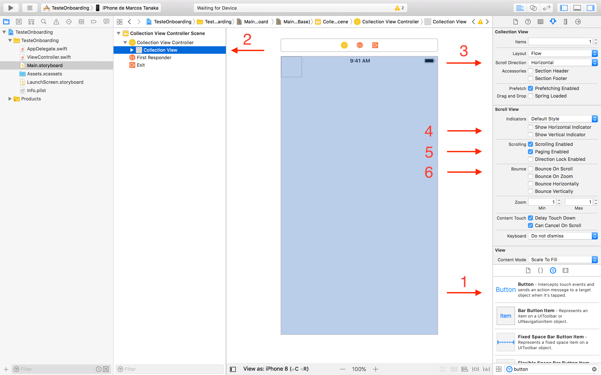
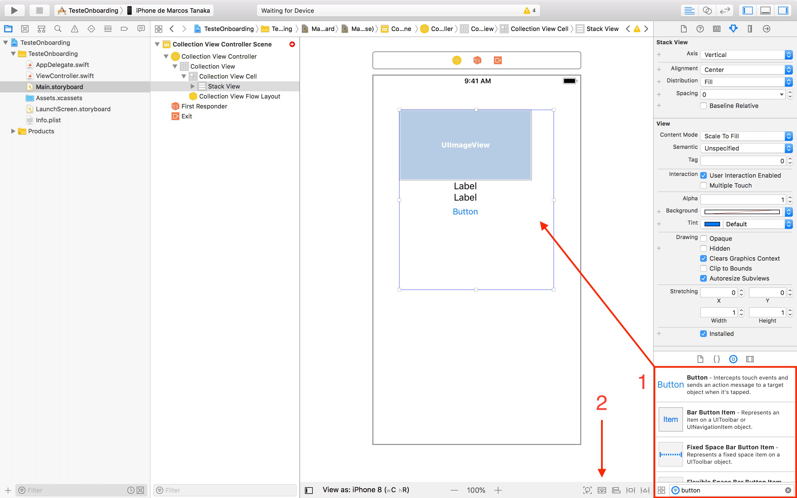
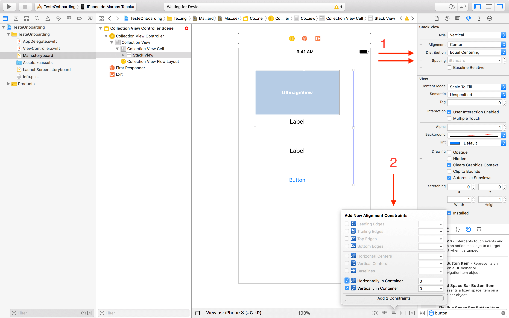

Criando onboarding com UICollectionView e Storyboard
Escrito em 28/07/2018 ~ Última atualização 07/08/2018
Sabe aquelas telas de boas vindas que vemos quando abrimos um app pela primeira vez? Este processo é feito para familiarizar o usuário com o app e suas funções. É uma oportunidade para apresentar as principais funcionalidades ou diferenciais do app, novidades de uma versão, ou tentar convencer usuários a se registrarem no serviço.
Neste tutorial irei ensinar como criar um onboarding com UICollectionView, desenhado no Storyboard. Os controllers das views serão escritos em Swift 4. Se quiser baixar o projeto completo, siga este link para o GitHub.
Storyboard
Acho legal usar o storyboard pra desenhar as views porque economiza muito tempo e linhas de código 😌, fora a vantagem de poder ver todo o fluxo de telas da aplicação de uma vez!
Por isso, vamos criar um novo projeto, abrir o storyboard, remover a View Controller padrão e colocar em seu lugar uma Collection View Controller. Com a ajuda do Document Outline, selecione a Collection View que está dentro da Collection View Controller. Queremos alterar algumas propriedades para que ela se comporte como um omboarding com scroll horizontal:
Além disso, vamos desmarcar as propriedades Show Horizontal Indicator e Show Vertical Indicator para que as barras de rolagem não apareçam. Desmarque também Bounce On Scroll e Bounce On Zoom, para que não ocorra o efeito de bounce ao fazer o scroll. E também marque a opção Paging Enabled, para que o scroll não pare entre uma página e outra.
Por fim, ainda no painel Utilities, na aba Size inspector, vamos alterar as propriedades Min Spacing For Cells e Min Spacing For Lines para 0. Isto fará qua não haja espaço entre as células, para que cada uma ocupe de fato a tela inteira (este tamanho vamos definir em código mais adiante 👨💻).
A propriedade Items da Collection View controla quantas células ela possui. Neste onboarding faremos com que a célula ocupe a tela inteira. Assim, Items dirá quantas páginas vamos ter no onboarding.
Vamos agora desenhar o protótipo da célula da Collection View. Todas as células seguirão este protótipo, mudaremos apenas as informações de cada uma. O pequeno quadrado no canto superior esquerdo da Collection View (🔬) é o protótipo da célula. Dentro dele ficarão os componentes visuais que compõem o protótipo. Para conseguirmos posicioná-los, aumente o tamanho da célula (não se preocupe com o tamanho real, pois definiremos isso programaticamente para preencher a tela inteira).
O layout será uma Image View no topo, com dois Labels em baixo e um Button. Para diminuir o número de Constraints, empilharemos tudo em uma Stack View vertical:
Vamos configurar a Stack View para ter Distribution: Equal Centering e Spacing: Standard. Depois, centralizá-la e definir a largura de 260px usando constraints.
Para os Labels dentro da Stack View, defina a propriedade Lines: 0 para que textos maiores quebrem a linha automaticamente. O primeiro label será o título, então usaremos a fonte com Style: Bold e Size: 24px.
Para a Image View, vamos adicionar uma constraint de altura fixa 120px. Além disso, o Content Mode será Aspect Fit.
E o Button terá a constraint de altura e largura fixos. A largura será >= 260px, e a altura será 40px. Assim ele ocupa a largura inteira da Stack View.
Código
Vamos agora escrever as classes por trás das views que desenhamos no storyboard. Precisaremos das seguintes:
OnboardingCollectionViewController: responsável pela Collection View - data source e delegate.OnboardingCollectionViewCell: responsável por preencher os dados de cada célula da Collection View.OnboardingModel: struct que define a estrutura dos dados apresentados no onboarding.OnboardingModelFactory: para facilitar a instanciação dos modelos que serão usados no onboarding.
Seguem abaixo:
UICollectionViewController
Depois de criar os arquivos, volte para o storyboard e defina as classes da Collection View Controller e da Collection View Cell. Além disso, defina o Reuse Identifier da célula como "OnboardingCell" (painel Utilities, na aba Attributes inspector).
Vamos agora implementar os métodos da classe OnboardingCollectionViewController. Nela definiremos a quantidade de páginas do onboarding, as informações de cada página, o tamanho (tela inteira), e também colocaremos um UIPageControl para indicar ao usuário qual página ele está atualmente.
Usando a factory criada anteriormente, instanciamos os conteúdos das três páginas de onboarding e colocamos na constante pages. Ela é a fonte de dados que alimenta a Collection View. Criamos também um UIPageControl e adicionamos programaticamente na view, definindo as constraints no método ddPageControlToView().
O tamanho de cada célula da Collection View é definido no método collectionView(_:layout:sizeForItemAt:). O tamanho será igual ao tamanho da Collection View, ou seja, a tela inteira.
O UIPageControl é atualizado no método scrollViewWillEndDragging(_:withVelocity:targetContentOffset:).
UICollectionViewCell
A OnboardingCollectionViewCell tem referência para os componentes de cada célula, e um método responsável por preencher essas referências com os dados:
Definimos também uma constante estática para o reuse identifier da célula (o mesmo definido no storyboard). Vamos usar essa constante no view controller, para referenciar a célula que será reaproveitada. A classe final ficará assim:
Perceba também que as primeiras instruções do método fill definem a cor de background da célula com base no OnboardingModel recebido.
Resources
O último passo é definir os resources usados em cada página. Basta editar o arquivo Assets.xcassets, dar um nome para cada recurso e arrastar as imagens para os respectivos slots:
Obs.: em um projeto real você vai querer definir as imagens para as resoluções 1x, 2x e 3x, para que a correta seja utilizada conforme a densidade de pixels do aparelho. Para facilitar este exemplo, estou usando uma imagem única para as três densidades 😝
Alguns detalhes
Fora o que está descrito aqui, melhorei alguns outros detalhes como o espaçamento entre a imagem e os textos, alguns detalhes do botão, e a organização dos arquivos do projeto. A ideia é que ele leve à view inicial do app, ou para o login. Recomendo baixar o projeto do GitHub para ver como ficou o resultado final.
Conforme novas versões do iOS e do Swift forem saindo, irei atualizar este tutorial para acompanhar as novidades. E gostaria também de receber sugestões de melhorias neste esquema ou formas melhores de criar onboarding no iOS, portanto, se tiver alguma sugestão, não hesite em compartilhar! 😉
Swift UICollectionView Storyboard Onboard Tutorial